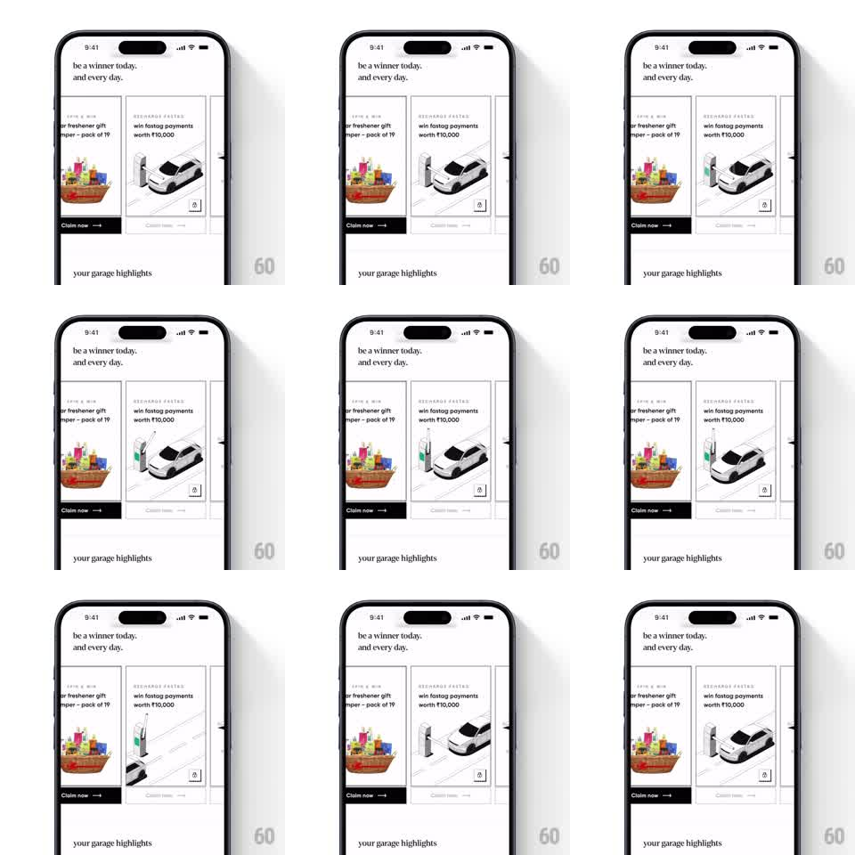

Media
Frame-by-frame

Rebuild this animation 1:1: CRED's FASTag recharge promo - on the white "be a winner today. and every day." screen, a promo card carries a looping line-art illustration of a car driving through a toll gate, passing the barrier arm as it lifts, next to a gift-hamper card with a "Claim now" CTA.

Rebuild this animation 1:1: CRED's FASTag recharge promo - on the white "be a winner today. and every day." screen, a promo card carries a looping line-art illustration of a car driving through a toll gate, passing the barrier arm as it lifts, next to a gift-hamper card with a "Claim now" CTA.
## Integration
Integration: stack-agnostic spec - springs given as stiffness/damping, timed motions as duration + curve; map every value to your framework and animation library of choice.
## Scene
White CRED screen with serif headline "be a winner today. and every day." A horizontal pair of promo cards: left card shows a colorful gift hamper ("freshener gift hamper - pack of 19", dark "Claim now" button); right card shows the line-art toll illustration ("win fastag payments worth ₹10,000"). Below: "your garage highlights" section header.
## Motion spec
Pattern: looping line-art drive-through.
- The car (drawn in thin black outline) drives from the right edge of the card toward the toll booth on the left (translateX, 2s linear, gentle wheel bob).
- As the car reaches the booth, the barrier arm rotates up (rotate -70deg around its pivot, 400ms ease-out, slight overshoot).
- The car passes through and exits left (1.2s); the barrier lowers back (400ms ease-in).
- Brief hold, then the loop restarts; the booth's beacon light blinks throughout (opacity pulse, 1s).
- The rest of the screen is static - the illustration loops independently inside the card.
## Calibration
- Everything is thin black line art on white; motion is smooth and mechanical, never springy.
- The car's speed is constant - no acceleration curves on the drive.
## Reduced motion
Static frame of the car at the booth with the arm raised.
## Don't miss
- The barrier's pivot and counterweight are drawn; the rotation happens around the pivot point.
- Road dashes scroll subtly under the car while it moves.